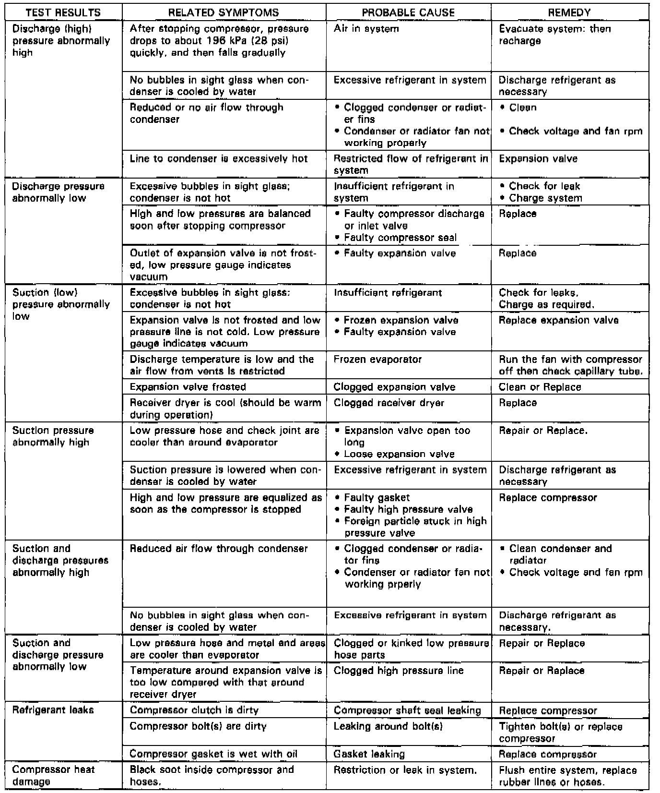

Operation CHARM
: Car repair manuals for everyone.
Home
>>
Acura
>>
1992
>>
Legend Sedan V6-3206cc 3.2L SOHC FI
>>
Repair and Diagnosis
>>
Heating and Air Conditioning
>>
Testing and Inspection
>>
Initial Inspection and Diagnostic Overview
>>
Initial Diagnostic Steps - Begin Here - Manual Heating and Air Conditioning
>>
Pressure Test Chart
Pressure Test Chart
